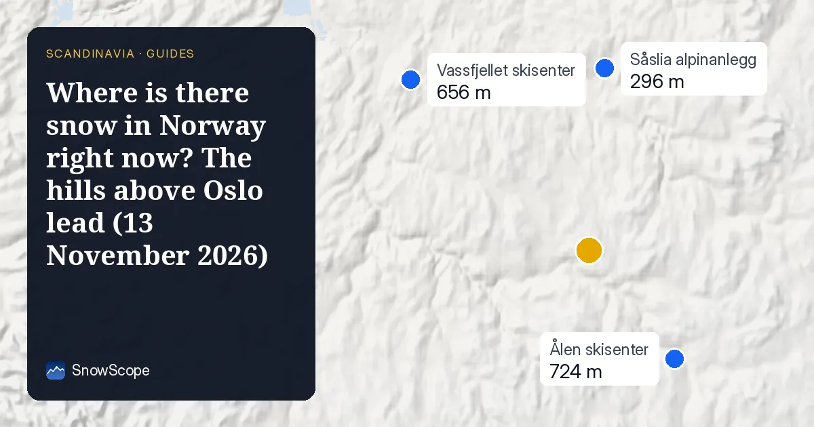

Where is there snow in Norway right now? The hills above Oslo lead (13 November 2026)
The heaviest snow in Norway this Friday fell on the forest hills just north of the capital. Tryvannshøgda jumped from 5 cm to 37 cm overnight, and Lyngen in Troms holds 44 cm at 710 m elevation. Everywhere else—the west coast, the Trøndelag lowlands, and inland Finnmark—has either bare ground or only a trace.
See the live snow forecast for Norge in the SnowScope appSnow depth, powder alerts and the 3D map, free.
Østlandet: one night, big change
A band of snow on 12 to 13 November caught the low hills of south-eastern Norway. The deepest cover now lies north of Oslo: Bjørnholt in Nordmarka 31 cm, Veggli in Numedal 17 cm, Hakadal 15 cm, Gulsvik in Hallingdal 13 cm, Flisa in Solør 11 cm. Central Oslo itself has only 4 cm at Blindern. The snow fell fast and stopped sharp—yesterday, Blindern had just 1 cm.
The mountains around this region tell a different story. Even at 900–1,900 m, the depth is thin and uneven. Skabu at 928 m holds 14 cm, Beitostølen at 965 m 12 cm, Filefjell 12 cm, but Juvasshøe at 1,894 m has only 5 cm. The snow sat on warm ground and compressed fast.

West coast and Trøndelag: bare or nearly bare
Bergen-Florida is bare ground. Ørland on the Trøndelag coast is bare. Trondheim itself reports no depth from its own stations. If you live in western Norway, the nearest measurable snow is inland: Tågdalen at 415 m has 18 cm, Røros at 630 m has 11 cm, Meråker at 171 m has 5 cm. The mountain passes have white patches but no skiing depth: Mjølfjell 10 cm, Fet in Eidfjord 9 cm, Haukeliseter 3 cm.
The low-lying coasts of Hordaland and Sogn had no snow on 13 November. This is not unusual for mid-November—the warm sea keeps the air mild. By December, if the pattern shifts colder, the picture will change.
The north: coastal snow, inland nothing
A thin, steady band of snow runs along the Nordland and Troms coasts: Bodø 5 cm, Harstad 6 cm, Tromsø 6 cm, Storforshei 8 cm, Nordstraum 8 cm. Lyngen stands alone at 44 cm—a local effect of orography and an early-season pulse of wet snow. On the Finnmark coast, Honningsvåg and Mehamn each have 7 cm.
Inland Finnmark breaks the pattern. Kautokeino and Karasjok recorded 0 cm. Cross the border into Swedish Lapland—Kiruna and the high forests—and the ground is also bare. The inland high plateau north of 69° has not yet caught enough cold to hold snow through the warm hours of mid-day.
What the coming days hold
Østlandet stays cold and dry on Saturday 14 November. Sunday 15 November turns milder, and rain reaches Oslo by Monday 16 November, washing away the thin cover on lower ground. Bergen faces a very wet Sunday, around 38–40 mm of rain—a sign of an Atlantic system pushing north.
Tromsø takes a sharp turn colder on Saturday and Sunday, dropping to about minus 11 °C, with 2 cm of new snow forecast on Sunday 15 November. That fresh snow will add to the existing coastal cover but will be light and cold on a stable base. The ski season, in short, stays held back by the warm sea and air masses.
Where to find skiable snow this weekend
If you are within two hours of a city, the best bets are the Nordmarka hills above Oslo—reach 300–500 m elevation and you will find 15–30 cm—and the coastal ridges around Tromsø and Harstad, which hold 5–8 cm on stable ground. Both areas have cold air overhead and are likely to see sun or light snow rather than melt. Nordmarka's roads open into the forest after heavy snow and become skiable fast.
Avoid lower ground: Flisa, Hakadal, and the Numedal valley will soften and become patchy by Sunday afternoon as rain mixes in from the west. Wait for the next system in late November to bring a more lasting base to the ski areas.
Safety notes for early-season snow
Fresh snow on bare, unfrozen ground often hides holes, streams, and exposed roots. Stay on known forest paths and marked trails. Do not ski off-piste in unknown terrain.
In the mountains—Nordmarka, Numedal, and the passes—check the avalanche bulletin on Varsom.no before you leave. Early snow on wind-loaded slopes at 600–900 m can become a weak layer when the next system arrives. Stability improves above 1,000 m but remains uncertain until more snow binds the base.
Tips for skiers
- Head to Nordmarka (above Oslo) or the Tromsø coast this weekend for the most reliable cover—30–40 cm and 5–8 cm respectively—while Sunday's rain stays west of the mountains.
- Lower elevations and exposed slopes will soften rapidly on Sunday; aim for ridges and high forest (300–500 m) where air stays cold.
- Avoid off-piste terrain in Østlandet until you have checked Varsom. Early snow bonds poorly to warm ground and can slide or collapse under new loads.
- Pack layers and a rain jacket: Saturday is cold and dry, but Sunday sees milder air move in from the Atlantic.
- Fresh snow hides streams and holes; on forest runs, follow marked routes and walk new areas by day before skiing them.
About these numbers
Resort snow depths are the deepest snow on the resort's upper slopes on the date shown; they are estimates for an area, not a measurement at one point. Forecasts can change. Always read the official avalanche bulletin before going off-piste.
Cite this report
For research, teaching or the press: the numbers and charts are free to reuse under CC BY 4.0 with this citation.
SnowScope (2026), Where is there snow in Norway right now? The hills above Oslo lead (13 November 2026), https://snowscope.app/blog/en/2026/11/where-is-there-snow-in-norway-13-november-2026.html, accessed 2026-11-13
SnowScope (Atlas Labs). (2026, November 13). Where is there snow in Norway right now? The hills above Oslo lead (13 November 2026). SnowScope snow reports. https://snowscope.app/blog/en/2026/11/where-is-there-snow-in-norway-13-november-2026.html
BibTeX
@misc{snowscope2026whereistheresnowinnorway,
author = {{SnowScope (Atlas Labs)}},
title = {Where is there snow in Norway right now? The hills above Oslo lead (13 November 2026)},
year = {2026},
month = nov,
howpublished = {\url{https://snowscope.app/blog/en/2026/11/where-is-there-snow-in-norway-13-november-2026.html}},
note = {Published 2026-11-13 20:29 UTC; accessed 2026-11-13}
}· CC BY 4.0 · Methods, data and tools →
Follow Norge
Free: a message when fresh snow is coming, and the forecast every morning.
More snow reports

Kvitfjell has about 5 cm at the top on 14 November 2026, well behind the usual 27 cm. Upper slopes will gain snow this week; the base stays wet.

Sälen station near Kläppen measured 45 cm on 13 November after one night of heavy snow. Rain and mild air arrive this week. Data from 13 November 2026.

Kiruna town has 0 cm of snow on 13 November. Dog-sledding operators work around thin early-season snow. What to know about tours and local rules.